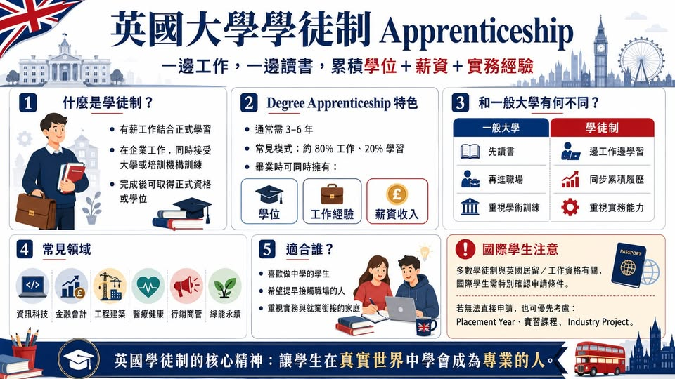

《看懂制度，選對世界》第一集
英國大學的學徒制 Apprenticeship
英國高等教育其實還有另一條很有特色的路線：Apprenticeship，學徒制。它的概念很簡單： 學生一邊在企業工作、一邊接受學校或培訓機構的專業訓練，最後取得正式資格。

【英國大學的學徒制 Apprenticeship】 英國高等教育其實還有另一條很有特色的路線：Apprenticeship，學徒制。它的概念很簡單： 學生一邊在企業工作、一邊接受學校或培訓機構的專業訓練，最後取得正式資格。英國官方對 apprenticeship 的定義，就是「有薪工作結合學習」，學生會在工作中累積實務經驗，同時完成正式資格訓練。其中最吸引人的，就是 Degree Apprenticeship 大學學位學徒制。這類課程讓學生在工作期間攻讀大學本科或碩士層級的學位。
UCAS 說明，degree apprenticeship 通常需要三到六年完成，學生大部分時間在企業工作，部分時間到大學上課或接受訓練；常見安排是約 80% 工作、20% 學習。這跟一般大學有什麼差別？一般大學路線是先讀書，再進職場。英國學徒制則是： 讀書與工作同步進行。學生進入企業後，會有實際職位、工作責任、薪資與職場訓練。學校端則負責學術課程、專業知識、評量與資格架構。
換句話說，學生畢業時，手上可能同時擁有三樣東西： 學位或專業資格 工作經驗 薪資收入 這也是為什麼英國近年愈來愈重視 apprenticeship。英國政府的 apprenticeship 搜尋平台也說明，學徒制期間，學生會工作、領薪水，並接受訓練取得資格。哪些領域常見？英國 apprenticeship 並非只限傳統技職領域。
現在很多 degree apprenticeship 已經進入高薪與專業產業，例如： 資訊科技與軟體工程 會計、金融、審計 工程、建築、製造 醫療健康與護理相關領域 行銷、商業管理、人力資源 綠能、永續、先進製造 UCAS 的 apprenticeship 搜尋系統中，也能看到 KPMG 等大型企業提供的審計、金融相關 apprenticeship 職缺，部分職缺屬於 Higher Apprenticeship 或 Degree Apprenticeship 層級。很多專業能力，其實很難只靠課本學會。
例如醫學、工程、設計、金融、教育、行銷、顧問工作，都有大量「跟著做、看前輩怎麼判斷、在真實情境中修正」的成分。這就是 apprenticeship 的核心精神。它不是把學生放進企業打工，而是讓學生在工作場域中，被訓練、被評量、被要求，也被逐步帶進一個專業領域。這種制度背後的思維很值得觀察： 英國教育重視「知識」，也重視「如何把知識用在真實問題上」。但國際學生要特別注意 對台灣學生來說，apprenticeship 很有參考價值，但申請上需要特別留意身份與簽證條件。
英國官方說明，申請 apprenticeship 通常需要年滿 16 歲、居住在英格蘭，且開始 apprenticeship 時不能是全職學生。UCAS 也列出類似條件：年滿 16 歲、居住在英國、非全職教育狀態。此外，英國 apprenticeship 涉及政府資助與雇主聘用，因此很多職缺會要求申請人符合 residency eligibility，也就是居留與工作權條件。
英國 2025–2026 apprenticeship funding rules 說明，培訓機構只能為符合居留資格條件的人申請 apprenticeship funding。所以，對一般持學生簽證赴英讀大學的國際學生來說，degree apprenticeship 不一定是最容易直接進入的路線。但它仍然非常值得了解，因為它代表英國高等教育與產業合作的方向。對台灣學生的啟發是什麼？英國 apprenticeship 給我們一個很重要的提醒： 選大學時，不該只看排名，也要看這所學校和產業之間的連結。
例如： 是否有企業合作課程？是否提供 placement year 實習年？是否有 industry project 產業專案？是否能把作品集、實習、研究、競賽整合進履歷？是否有職涯中心協助學生銜接工作市場？對國際學生來說，真正能操作的路線，通常未必是 apprenticeship 本身，而是選擇那些重視實務、實習、產業合作、職涯導向的大學課程。
例如英國常見的： Placement Year Sandwich Course Internship Module Industry Project Professional Accreditation Graduate Route 就業銜接規劃 這些都和 apprenticeship 背後的精神很接近： 讓學生在大學期間，就開始理解職場、接觸產業、累積履歷。給學生與家長的建議 如果學生喜歡「做中學」，英國其實非常適合。英國高等教育不只有傳統學術路線，也有非常成熟的職涯導向設計。
從 degree apprenticeship 到 placement year，背後都反映同一個方向： 學生不只是要會考試，還要能把知識轉化成能力。不只是拿到文憑，還要知道自己未來能進入哪一種產業角色。